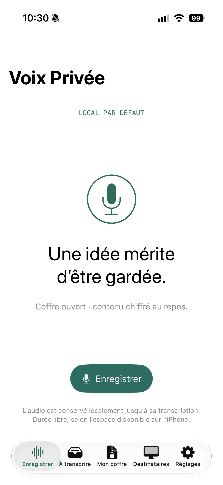
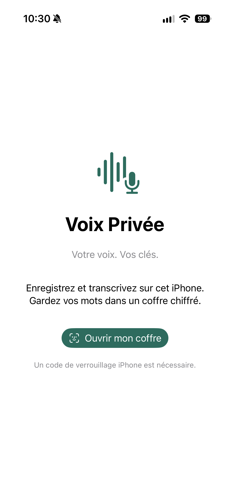
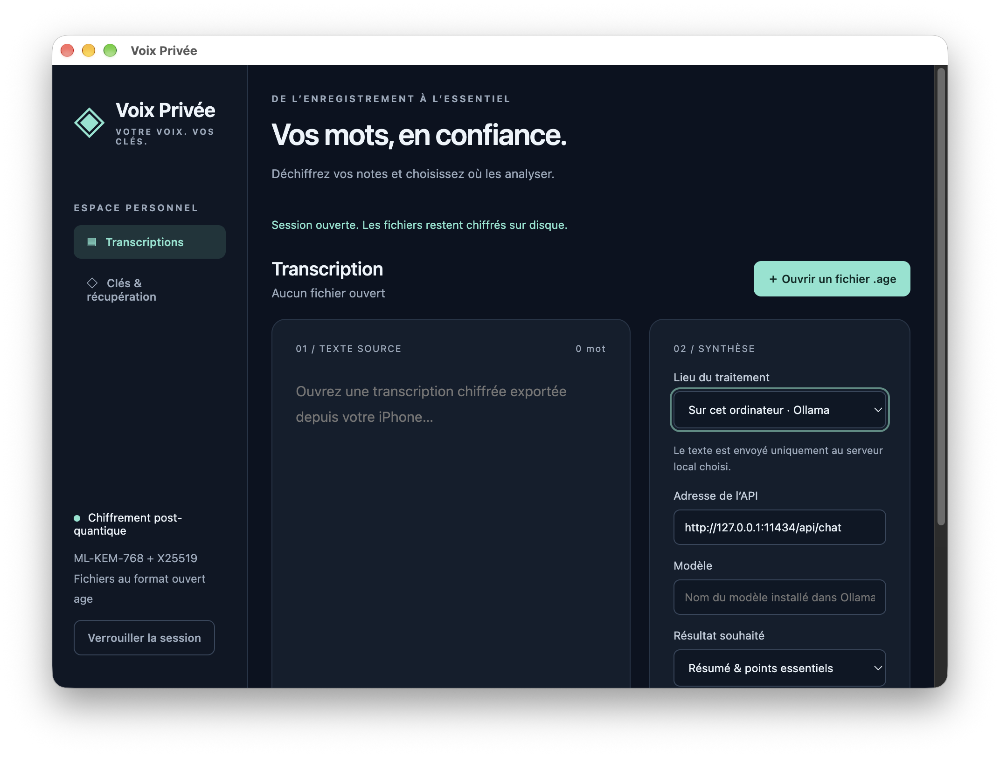

Transcription embarquée
Le modèle Whisper s’exécute sur l’iPhone. Seule son installation initiale nécessite Internet.
Enregistrez votre voix, transcrivez-la directement sur votre iPhone et protégez chaque texte avec un chiffrement post-quantique.

Chaque étape reste explicite : vous choisissez quand transcrire, où exporter et comment analyser vos textes.
L’onde réagit à votre voix en temps réel. L’enregistrement reste sur l’iPhone, sans limite arbitraire.
Lancez une transcription quand vous le souhaitez. Whisper fonctionne localement et peut poursuivre un temps en arrière-plan.
Chaque note rejoint votre coffre chiffré. Les exports destinés à vos ordinateurs utilisent le format ouvert age.
Ouvrez le texte sur Mac, puis choisissez un LLM local avec Ollama ou un service distant après confirmation.
Conçue pour l’iPhone 15 Pro et les modèles plus récents, l’application suit le mode clair ou sombre du système et garde le contrôle au bout de vos doigts.

Voix Privée réduit les sorties de données par conception. L’audio et la transcription restent sur l’iPhone jusqu’à ce que vous décidiez d’exporter.
Le modèle Whisper s’exécute sur l’iPhone. Seule son installation initiale nécessite Internet.
La clé privée iPhone est protégée par le trousseau et la présence utilisateur, sans synchronisation iCloud.
Chaque export est chiffré pour les ordinateurs que vous avez associés et dont vous avez vérifié l’empreinte.
Un LLM distant ne reçoit un texte déchiffré qu’après affichage du domaine et confirmation de votre part.
Votre Mac reçoit les fichiers .age, déchiffre le texte en mémoire et vous laisse choisir le moteur qui produira le résumé ou la synthèse.

Connectez un modèle installé sur ce Mac ou sur un ordinateur de confiance du réseau local. Le mode Ollama refuse les adresses Internet publiques.
Choisissez votre fournisseur. L’application affiche la destination et attend votre accord avant chaque transmission.
Oui, après l’installation initiale du modèle Whisper. Les fichiers du modèle sont ensuite utilisés directement sur l’iPhone.
Oui. Chaque enregistrement rejoint une file locale. Vous pouvez lancer un élément précis ou toute la file quand vous le souhaitez.
Pas par défaut. Un service LLM distant ne reçoit le texte qu’après votre choix explicite et une confirmation affichant le destinataire.
Sans clé ou sauvegarde exploitable, les notes concernées ne peuvent pas être récupérées. L’application permet donc d’exporter des sauvegardes chiffrées.
Une chaîne complète pour enregistrer, transcrire, chiffrer et synthétiser vos paroles selon vos propres choix.
Découvrir le projet sur GitHub Version de développement 0.1.2 · iPhone 15 Pro ou plus récent · macOS Apple silicon